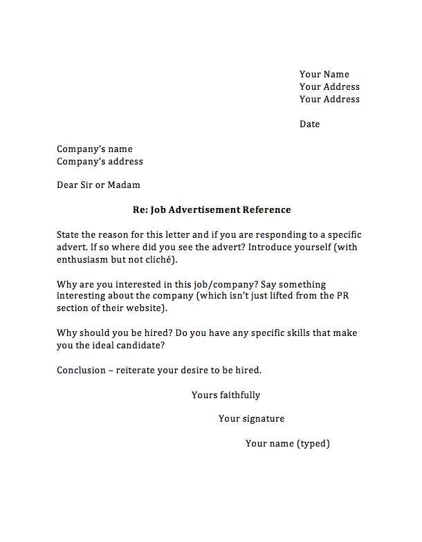

- You are applying to a Small or Medium Enterprise (SME) - for instance, a tech start up.
- You are speculatively writing to enquire whether or not a job is available.
2. The world doesn't owe you a living. Enthusiasm is good but the main point of the letter isn't to explain why this job will benefit you. Make sure to explain what benefits you'll bring to the company - in terms of technical skills, abilities and values. This isn't to say that you shouldn't be enthusiastic - in some sectors this is essential (notably the games industry).
3. Avoid passive constructions, cliches, slang and jargon for jargon's sake.
4. Make sure both your CV and letter have your contact details: name, address, phone number and email. Don't make it hard for anybody to give you a job.
5. Don't simply repeat the content of your CV. Where possible, focus on specific abilities you have which make you the perfect candidate for this particular job. Don't repeat phrases found in your CV (especially your personal statement). If a recruiter mentions specific skills required then explicitly state you have these (as long as you do).
6. Do not write more than a page and don't waffle. Any recruiter will give you a limited amount of time/attention. Don't waste it.
| The following is an example (click for full size) |  |
{kind=link}
1. Your address and contact details go in the top left corner of the page. Under this should be today's date. The contact details of who you're applying to should go lower down in the left side of the page.
2. If you know the specific name of the recruiter, use it. It's best to use "Dear Dr. Michael Smith" rather than "Mike" unless you already know him or her well. If you don't have a name use "Dear Sir or Madam." Do NOT assume either gender - use both.
3. Start by explaining why you're writing - if you're applying to a specific job advert, explain where you saw the advert. If there is a specific reference number - use it. If you are asking if any job is available then use a phrase like "I am writing to enquire whether a job offer exists." Also explain who you are - if you have graduated then say so. If you haven't then say when you will.
4. Next say why you wish a job at the particular company. Be specific about the company. You should demonstrate that you know who the company are - don't just copy a phrase or two from their website.
5. Then sell yourself - explain what skills/abilities you have and why you are a perfect candidate. Be confident and positive.
6. Finally reiterate why you want this job. One line will do and don't overstate it but finish on a positive, confident note. Sign off with "yours sincerely" (if you've addressed a specific name) or "yours faithfully" (if not).
1. You need to sell yourself. However, every claim you make needs to be evidence-based. In CV world, every candidate is a natural born leader with excellent communication skills, who is independent and proactive but also works well in a team. Hopefully by now you've realised that this isn't reality. No recruiter is impressed by such claims. If you wish to claim something then provide an example of when you demonstrated a skill. This can be technical - claiming to be a great programmer means you should have code available (hosted on github for instance) or softskills - claiming you have great communication skills means you should have done something which requires this (even if it's being in a debating team).
2. You need softskills such as teamwork, communication, time management, etc. Possibly a long time ago you could survive in the IT industry as a lone geek who was left alone to write code. This is no longer the case: most development is done in teams and if you cannot explain the code you write then it's less than useless since somebody else is one day going to need to debug it.
3. You might not have such skills now. That's okay - hopefully you're still at university and universities are a great place to development such things and not just in your studies. There are a lot of opportunities - student competitions (e.g. hackathons) and relevant jobs. The Guild is also very useful - if you can claim that you've ran a student society (regardless of what it was about) then you can probably justify a whole range of useful social skills (such as the ability to herd cats).
4. Some technical jobs will require specific skills and often a company will hire a recruitment agency to sift through applications. Therefore if you apply for a job as a Scala programmer then you need to explicitly list these skills on your CV and cover letter. Don't leave it up to the reader to guess this: the recruitment agent probably doesn't know what Scala is.